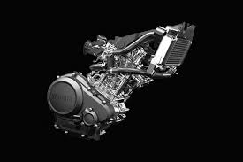
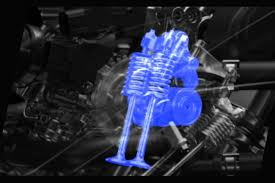
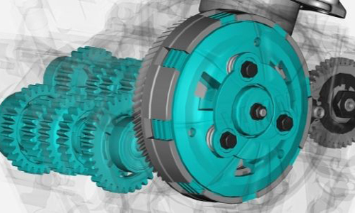
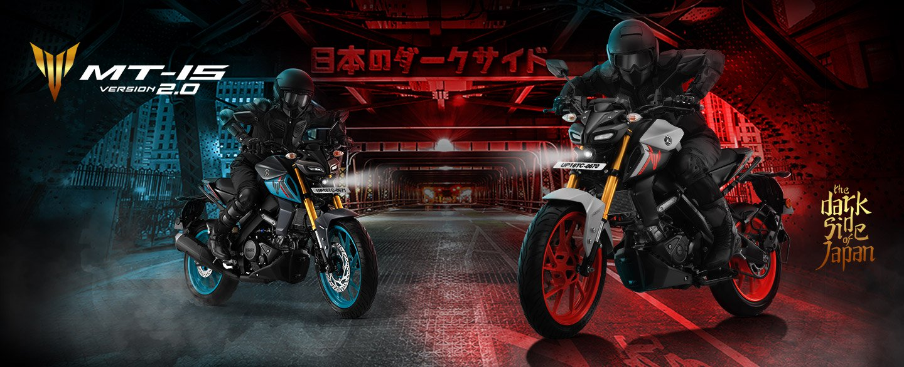
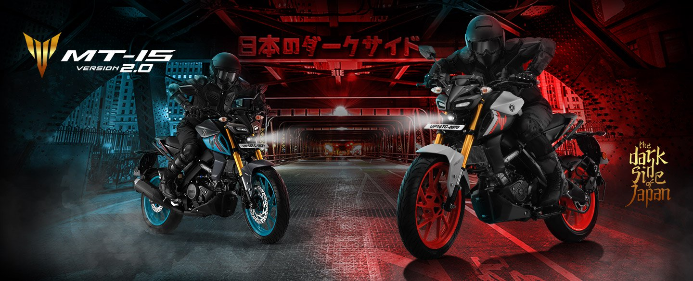

R15M
General Information
Yamaha R15M
We R Racing Perfection Born of Yamaha’s racing DNA that shaped legends like M1,
The R1M and the R-series, The R15M takes the racing quotient to next level with
stunning new graphics, 3D Emblem & Special Seat, 155 CC LC4V SOHC FI ENGINE
WITH VVA equipped with a Traction Control System and a Quick Shifter.

| Specification |
| Engine Type |
Displacement |
Maximum Horse Power |
| Liquid-cooled, 4-stroke, SOHC, 4-valve |
155CC |
13.5kW(18.4PS)/10000 RPM |
| Maximum torque |
Transmission type |
Clutch Type |
| 14.2 Nm (1.4 kgfm) @7,500 RPM |
Constant mesh, 6-speed |
Wet, Multiple Disc |
| E20 Compatible |
Compression Ratio |
Starting system type |
| Yes |
11.6 : 1 |
Electric starter |
On Road Price: ₹ 2,30,790/-
155 cc LC 4V SOHC FI Engine with VVA

Power up with the liquid-cooled single overhead camshaft fuel injected engine,
delivering max horsepower of 13.5kW(18.4PS)/10000r/min and maximum torque of
14.2N.m (1.4kgf.m)/7500r/min. Plus, it's equipped with a Traction Control System
and Quick Shifter (up-shift).
Variable Valve Actuation (VVA)

This unique high-performance VVA system delivers torque even at low RPMs
for easy use. It features two intake valve cams – one for low to mid-range
RPMs and another for high RPMs. They switch at 7,400 RPM to maintain strong
power and torque across the full rev range.
Assist & Slipper Clutch

The A&S clutch lightens the clutch pull for low-stress shifting during
deceleration, reducing rider fatigue. It also prevents excessive engine
braking, improving chassis behavior. The A&S clutch ensures smooth, enjoyable
downshifts.

 
